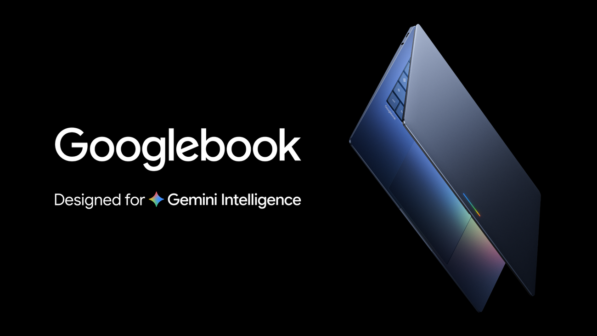
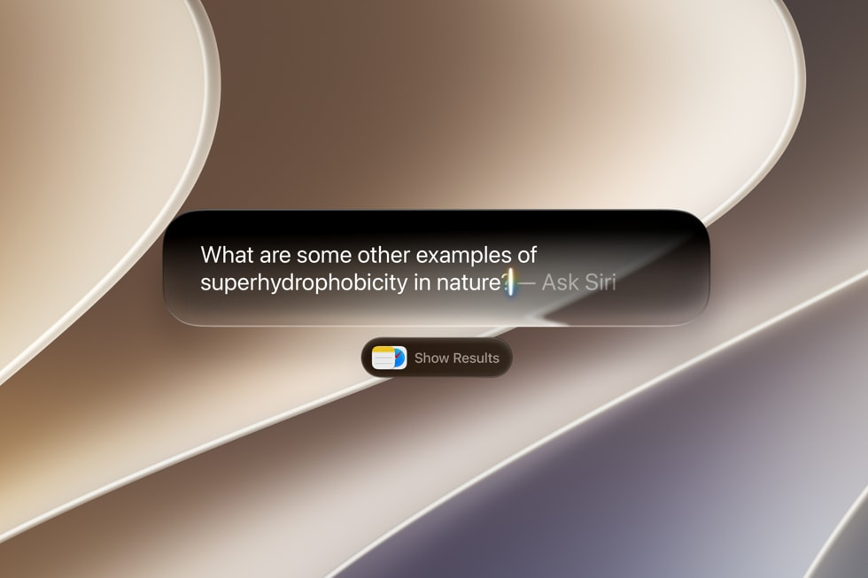
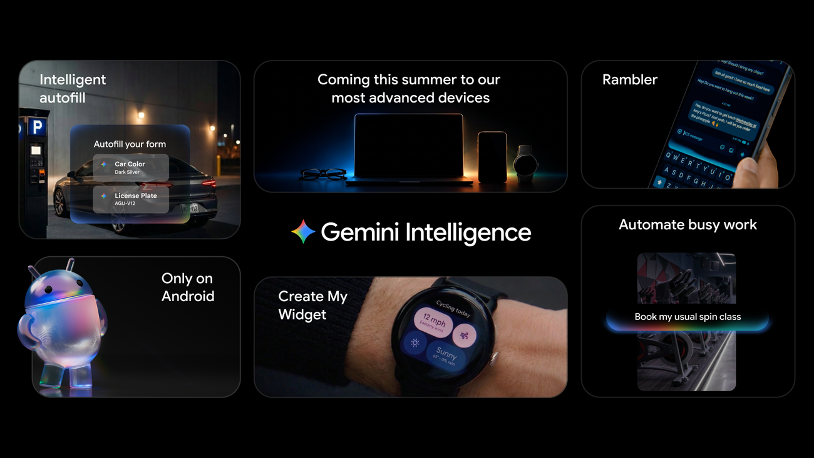
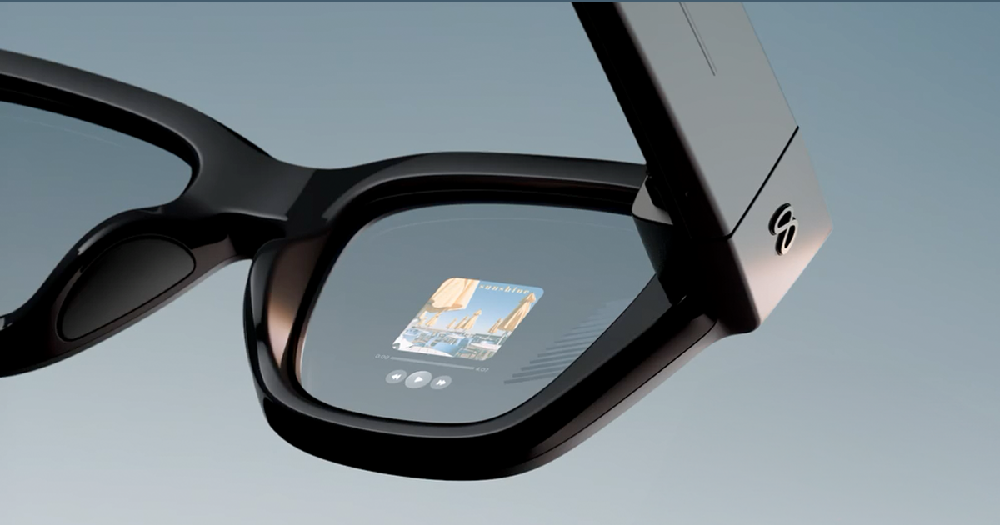
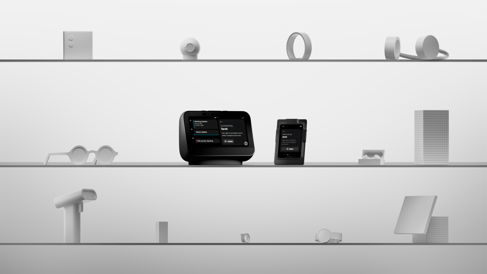
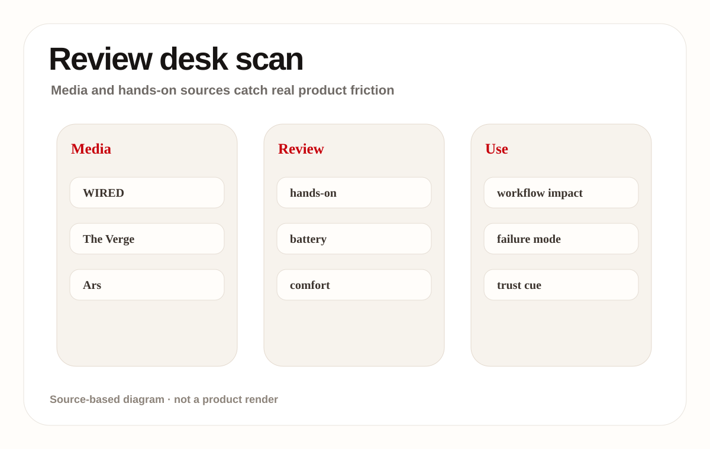
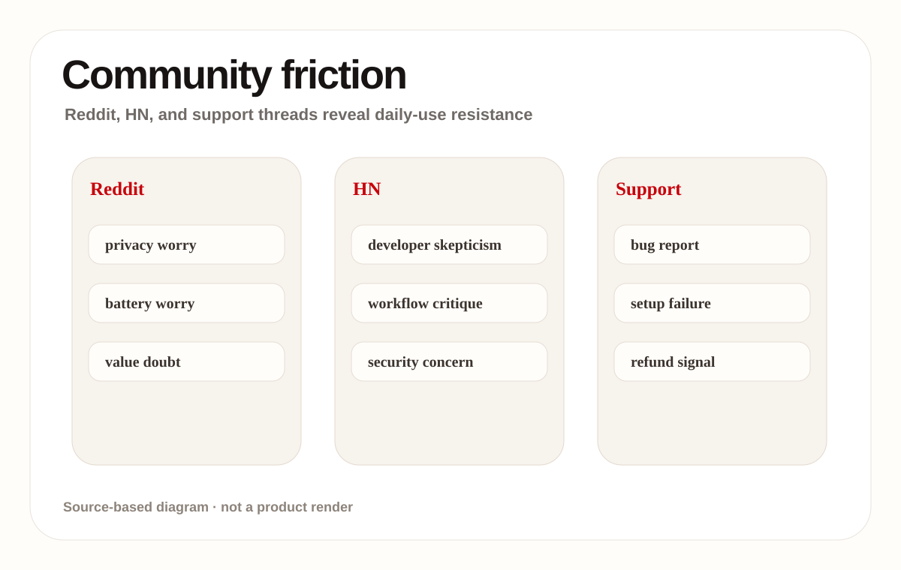
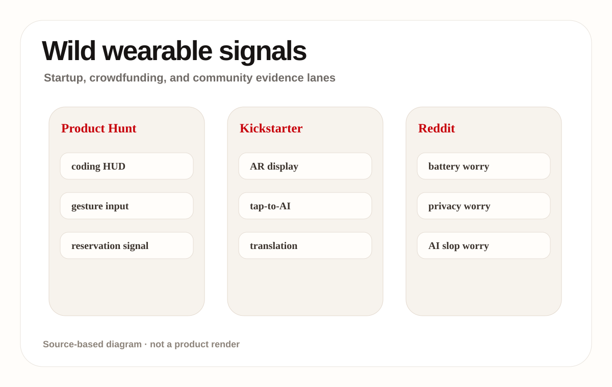
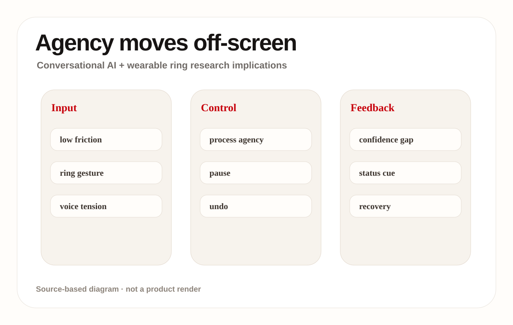
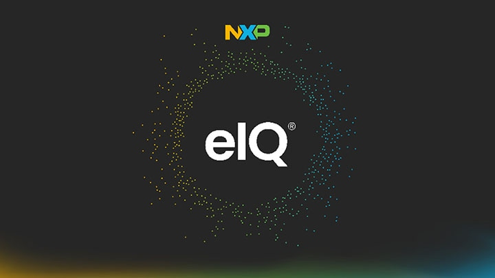

这是 Apple 在 iOS 27、iPadOS 27、macOS 27、watchOS 27 和 visionOS 27 上推出的新一代系统级 Siri。它不是独立聊天应用，而是横跨 iPhone、iPad、Mac、Apple Watch、AirPods、CarPlay 和 Apple Vision Pro 的默认 AI 入口，连接屏幕内容、个人上下文、Spotlight、App Toolbox、Visual Intelligence 和 Writing Tools。
01
2026-06-17 · America/Toronto
AI Daily
默认入口正在从 App 转回系统、桌面与穿戴层
今天最强的系统级信号不是又多了一个 AI 功能，而是默认入口被重新分配给桌面、系统和穿戴层。
Googlebook 把 AI PC 从“带 AI 功能的电脑”推进成一个新的系统交互类别。
如果这条路成立，竞争重点会从模型跑分转向工作流闭环、权限透明和低打扰反馈。
HCIAI hardwareAI softwareAI PCsmart glassesagentic deviceson-device AI
来源： 封面原文

02
今日导航
先看结构，再看证据
今天按八条线读：官方产品、媒体评测、社区摩擦、野生产品、研究、专利、中国与海外。
03
大厂官方
大厂官方
Official Desk / 大厂官方
confirmed product · high / official announcement
Apple：Siri AI 把个人上下文、视觉理解和 app actions 收回系统层
confirmed product · high / official product blog
Google Android：Gemini Intelligence 把主动任务执行推进手机系统层
confirmed product · high / official product blog
Googlebook：AI PC 开始从功能清单转向默认工作表面
developer surface · high / official developer preview
Meta：Display Glasses developer preview 让眼镜第一次成为可编程 UI 终端
developer surface · high / official platform article
Microsoft Solara：agent-first device 的关键不是设备外形，而是可信任的系统栈
04
Official Desk / 大厂官方 · 1/3
大厂官方
confirmed product · high / official announcement
2026-06-08
Apple：Siri AI 把个人上下文、视觉理解和 app actions 收回系统层
产品: Siri AI / Apple Intelligence system agent. Apple 在 2026-06-08 的官方新闻稿中发布 Siri AI，强调 personal context understanding、onscreen awareness、Visual Intelligence、Writing Tools 和更广的跨 app actions。

用户可以说 Hey Siri、按侧边键、从 Dynamic Island 下滑，在 iPad/Mac 的 Spotlight 中输入问题，或在系统上下文菜单里对图像、文件、文字 control-click 后 Ask Siri。典型流程是：用户指向当前屏幕或个人资料，Siri 读取可用上下文，给出回答或调用 app action，再把结果放回 Notes、Mail、Messages、Photos 或当前屏幕任务。
官方披露的栈包括 Apple Intelligence、下一代 Apple Foundation Models、Private Cloud Compute、system orchestrator、Spotlight index 和 App Toolbox。设备端能力用于保持数据控制；需要服务器处理时走 Private Cloud Compute。来源未披露具体模型参数、端侧算力占用、每类 app action 的权限粒度，也未列出第三方 app 支持清单。
05
Official Desk / 大厂官方 · 2/3
大厂官方
confirmed product · high / official announcement
2026-06-08
Apple：Siri AI 把个人上下文、视觉理解和 app actions 收回系统层
产品: Siri AI / Apple Intelligence system agent. Apple 在 2026-06-08 的官方新闻稿中发布 Siri AI，强调 personal context understanding、onscreen awareness、Visual Intelligence、Writing Tools 和更广的跨 app actions。
Apple 给出的场景包括：找出朋友发来的餐厅推荐、从旧邮件里调出酒店确认号、检索旅行照片；收到 potluck 短信后让 Siri 想菜谱并加入 Notes；在 Camera 的 Siri mode 中识别餐盘营养或拆账；在 Mac/iPad 上选择屏幕内容后提问；在 Mail/Messages 里按收件人语气生成或修改文本。
它瞄准的是“我知道要做什么，但不知道要打开哪个 app、复制哪段信息、再贴到哪里”的系统摩擦。过去用户要自己在邮件、消息、照片、浏览器和笔记之间搬运上下文；现在入口变成当前屏幕和个人历史。对多设备用户，Dedicated Siri app 和 iCloud conversation sync 还试图解决跨设备对话断裂。
新技术点不是单个语音助手，而是屏幕感知、个人上下文搜索、系统级 app actions、Visual Intelligence 多模态理解和 Private Cloud Compute 的组合。更重要的是 Spotlight 第三方集成：Apple 明确说个人上下文可在开发者接入 Spotlight 后扩展到第三方 app，这把 Siri 从系统 app 助手推向 OS action layer。
06
Official Desk / 大厂官方 · 3/3
大厂官方
confirmed product · high / official announcement
2026-06-08
Apple：Siri AI 把个人上下文、视觉理解和 app actions 收回系统层
产品: Siri AI / Apple Intelligence system agent. Apple 在 2026-06-08 的官方新闻稿中发布 Siri AI，强调 personal context understanding、onscreen awareness、Visual Intelligence、Writing Tools 和更广的跨 app actions。
开发者测试从 2026-06-08 开始，面向 iOS 27、iPadOS 27、macOS 27 和 visionOS 27；watchOS 27 的开发者测试会在后续 beta 提供。用户 beta 计划在 2026 年稍晚推出，先支持英语设备。官方列出支持设备，包括 iPhone 16 系列或更新、iPhone 15 Pro/Pro Max、A17 Pro iPad mini、M1 及以上 iPad/Mac、Apple Vision Pro、Apple Watch Series 9/Ultra 2/SE 3 等。
初期不在中国提供；iOS、iPadOS、watchOS 上的 EU 初期也不可用，Mac 和 Vision Pro 在 EU 可按支持语言访问。官方没有说明第三方 app action 审核规则、失败恢复 UX、撤销机制、用户如何查看 Siri 读了哪些上下文，也没有给出离线可用范围。多模态和跨 app 执行越强，权限透明越容易成为真实使用瓶颈。
干货判断：Siri AI 是 Apple 把 AI 入口重新收回 OS 的产品化动作。它的强项是系统位置、个人数据和设备生态；最大风险不是模型是否会聊天，而是用户能否清楚看到它何时读上下文、何时执行动作、失败后如何撤销。
07
Official Desk / 大厂官方 · 1/3
大厂官方
confirmed product · high / official product blog
2026-05-12
Google Android：Gemini Intelligence 把主动任务执行推进手机系统层
产品: Gemini Intelligence on Android. Google 在 2026-05-12 的官方文章中介绍 Gemini Intelligence，把多步自动化、Rambler、Create My Widget 和基于屏幕/图像上下文的任务执行带到 Android。

这是 Google 给 Android 加的系统级 Gemini Intelligence 层，把手机从“运行 app 的系统”推进到可主动处理任务的 intelligence system。它覆盖多步 app automation、Gemini in Chrome、Autofill with Google、Rambler 语音转文字、Create My Widget 和 Material 3 Expressive 的新界面语言。
用户可以长按电源键从当前屏幕或图像调用 Gemini，例如对着 Notes 里的购物清单说生成配送购物车，或拍一张酒店大堂旅游册后说在 Expedia 找 6 人 tour。系统会在后台推进任务，用通知显示进度，最终把确认权交回用户。Rambler 则让用户自然说一段混乱口语，再转成更正式的消息。
官方披露的组成包括 Gemini Intelligence、Chrome 中的 Gemini、Autofill with Google、Personal Intelligence、Gboard/Rambler、Create My Widget、Wear OS widget 和 Material 3 Expressive。Google 提到在 Galaxy S26 和 Pixel 10 上调优多步自动化，并会接入 connected apps 信息。来源未披露本地/云端分工、模型参数、API 限额或第三方 app 接入规范。
08
Official Desk / 大厂官方 · 2/3
大厂官方
confirmed product · high / official product blog
2026-05-12
Google Android：Gemini Intelligence 把主动任务执行推进手机系统层
产品: Gemini Intelligence on Android. Google 在 2026-05-12 的官方文章中介绍 Gemini Intelligence，把多步自动化、Rambler、Create My Widget 和基于屏幕/图像上下文的任务执行带到 Android。
具体场景包括：抢 spin class 的前排车位；从 Gmail 找 syllabus 并把所需书籍放入购物车；在 Chrome 里总结、比较网页并填写复杂表单；用 Gemini 把手机 app 里的信息填入表单；把带口头停顿的语音整理成多语言消息；用自然语言生成 meal prep 或骑行天气 widget，放在主屏或 Wear OS 手表上。
Google 瞄准的是手机上的三类重复劳动：跨 app 找信息和执行任务、移动端小屏复杂表单、口语输入转正式文字。用户过去要在浏览器、Gmail、购物、叫车、笔记和键盘之间切换；Gemini Intelligence 试图把这些步骤压成一次自然语言命令，并在最后确认前让用户保持控制。
新技术重点是把视觉/屏幕上下文接入多步执行，而不是只在聊天窗口回答。Autofill 使用 Gemini 的 Personal Intelligence 读取 connected apps 中的相关信息；Rambler 针对真实口语里的重复、停顿和混语做重写；Create My Widget 把自然语言变成可放在主屏的生成式 UI。Google 还把界面层更新到 Material 3 Expressive，强调 purposeful animation 和低分心。
09
Official Desk / 大厂官方 · 3/3
大厂官方
confirmed product · high / official product blog
2026-05-12
Google Android：Gemini Intelligence 把主动任务执行推进手机系统层
产品: Gemini Intelligence on Android. Google 在 2026-05-12 的官方文章中介绍 Gemini Intelligence，把多步自动化、Rambler、Create My Widget 和基于屏幕/图像上下文的任务执行带到 Android。
Google 表示 Gemini Intelligence 会从 2026 年夏天开始在最新 Samsung Galaxy 和 Google Pixel 手机上分批推出，随后在当年晚些时候扩展到 Android 设备生态，包括 watch、car、glasses 和 laptops。Chrome 智能浏览助手从 6 月下旬开始进入 Android 设备。部分例子和设备名称来自官方文章，具体国家、语言、机型完整清单未在来源中列出。
Google 强调用户保持控制：Gemini 只在用户命令下行动，任务完成后停止，并把最终确认留给用户；Autofill 连接 Gemini 是 opt-in，可在设置中开关；Rambler 的音频只用于实时转写，不存储。未知点包括：后台自动化失败时如何恢复、第三方 app 是否需要适配、任务日志如何展示、不同地区是否有隐私或合规限制。
干货判断：Gemini Intelligence 的核心不是一个更醒目的 Gemini 按钮，而是把 Android 的 power button、Chrome、Autofill、Gboard、widgets 和 Wear OS 变成同一个任务执行面。它真正解决的是小屏多步骤劳动；风险是自动化一旦跨 app，就必须把进度、权限和确认做得非常清楚。
10
Official Desk / 大厂官方 · 1/3
大厂官方
confirmed product · high / official product blog
2026-05-12
Googlebook：AI PC 开始从功能清单转向默认工作表面
产品: Googlebook. Google 把 Googlebook 定义为为 Gemini Intelligence 设计的新 laptop 类别，重点是 Magic Pointer 和 prompt-built widgets 这类桌面层交互能力。
Googlebook 是 Google 提前展示的新 laptop 类别，为 Gemini Intelligence 从底层设计。它不是现有 Chromebook 的简单改名，而是把 Android 技术栈、ChromeOS 浏览器、Google Play apps、Gemini、Magic Pointer、prompt-built widgets、Android 手机 app/file continuity 和硬件 glowbar 组合成 AI PC 的新入口。
用户从光标开始交互。Magic Pointer 把 Gemini 建议放到 cursor 附近，减少从桌面切到聊天窗口的动作；Create your Widget 让用户用 prompt 生成桌面 dashboard，例如把柏林家庭聚会的航班、酒店、餐厅预订和倒计时组织到一个 widget。用户还可以从 laptop 直接打开手机 app，或在文件浏览器中查看、搜索、插入手机文件。
官方披露的栈是 Android + ChromeOS：Android 带来 Google Play apps 和 Intelligence-oriented OS，ChromeOS 带来浏览器。硬件由 Acer、ASUS、Dell、HP、Lenovo 等伙伴制造，采用 premium craftsmanship/materials、多形态多尺寸，并用 unique glowbar 识别 Googlebook。来源未披露 CPU、NPU、RAM、屏幕、续航、价格、重量和具体型号。
11
Official Desk / 大厂官方 · 2/3
大厂官方
confirmed product · high / official product blog
2026-05-12
Googlebook：AI PC 开始从功能清单转向默认工作表面
产品: Googlebook. Google 把 Googlebook 定义为为 Gemini Intelligence 设计的新 laptop 类别，重点是 Magic Pointer 和 prompt-built widgets 这类桌面层交互能力。
Google 给出的使用场景很具体：计划家庭聚会时让 Gemini 生成旅行和预订 dashboard；工作中不离开 laptop 就点手机外卖 app；收到 Duolingo 提醒时在电脑屏幕里完成手机 lesson；在 Googlebook 文件浏览器里直接拿手机文件，不需要传输。更广泛看，它服务的是桌面工作、手机连续性和个人信息整理。
它解决的是 AI PC 上最常见的割裂：AI 在聊天框里，桌面、文件、手机 app 和 widget 在另一个世界。用户要不停复制、打开浏览器、找手机文件、切设备。Googlebook 的产品逻辑是把 AI 建议放在光标旁，把手机内容放进 laptop 文件系统，把个性化结果放进桌面 widget。
新技术/新界面点包括 Magic Pointer、Create your Widget、Android phone app continuity、Quick Access phone file browser，以及 Googlebook glowbar 这种功能性识别。Google 还提到 Magic Pointer 与 DeepMind 团队合作。真正的新意不在硬件参数，而在 pointer-adjacent AI：让 agent 出现在用户正在指向的对象旁边，而不是要求用户切到独立 chat pane。
12
Official Desk / 大厂官方 · 3/3
大厂官方
confirmed product · high / official product blog
2026-05-12
Googlebook：AI PC 开始从功能清单转向默认工作表面
产品: Googlebook. Google 把 Googlebook 定义为为 Gemini Intelligence 设计的新 laptop 类别，重点是 Magic Pointer 和 prompt-built widgets 这类桌面层交互能力。
Google 表示会在 2026 年晚些时候分享更多，设备将在 fall 可用；googlebook.com 是后续信息入口。首批硬件伙伴包括 Acer、ASUS、Dell、HP 和 Lenovo。官方没有给出首发国家、价格、企业 SKU、芯片平台、端侧模型要求或是否可升级到现有 Chromebook 的说明。
这是 sneak peek，规格仍大面积未披露。最关键的未知包括：Magic Pointer 的触发条件、是否能读取所有桌面对象、权限提示形态、widget 生成是否可审计、手机 app 在 laptop 中运行的兼容性、Google Play app 在桌面尺寸上的适配质量，以及 glowbar 是通知/状态灯还是纯识别。
干货判断：Googlebook 是 AI PC 里少见地把“光标、桌面、手机连续性、widget”都当成 AI 交互面的产品。它不像单纯堆 NPU 的 PC，更像把 Android 生态搬进 laptop。真正成败会看 Magic Pointer 是否能减少上下文解释，而不是制造新的桌面噪音。
13
Official Desk / 大厂官方 · 1/3
大厂官方
developer surface · high / official developer preview
2026-05-14
Meta：Display Glasses developer preview 让眼镜第一次成为可编程 UI 终端
产品: Meta Ray-Ban Display glasses developer preview. Meta 在 2026-05-14 开放 display glasses developer preview，允许开发者通过原生 SDK 或 Web App 把 text、images、lists、buttons 和 video 放上眼镜显示层，并接入 motion、orientation、phone GPS 和 neural-band input。

这是 Meta 面向 Ray-Ban Display glasses 开放的开发者预览，把 AI 眼镜从拍照、语音和通知设备推进到可编程显示终端。它提供两条开发路径：移动端原生 SDK 和 Web Apps。目标不是让眼镜跑完整手机 app，而是在用户视野里提供轻量、可 glance 的信息、控件和微应用。
用户佩戴眼镜，通过 Meta Neural Band 的表面肌电 EMG 做细微手指和手势控制，不必摸镜腿、拿手机或大声说话。开发者可以把 text、images、lists、buttons、video playback 放到眼镜显示层；Web App 则可以用 HTML/CSS/JavaScript 构建游戏、公交工具、烹饪指南、购物清单、乐器练习等，再通过 URL 部署到眼镜。
官方披露的 stack 包括 Meta Wearables Device Access Toolkit、iOS/Android 原生 SDK、Swift/Kotlin 工具链、Web Apps、HTML/CSS/JavaScript、camera、audio、display、motion、orientation、phone GPS、Meta Neural Band input 和 local storage。输入硬件重点是 Meta Neural Band 的 EMG 手势；来源未披露显示分辨率、视场角、亮度、芯片、续航或 SDK 权限配额。
14
Official Desk / 大厂官方 · 2/3
大厂官方
developer surface · high / official developer preview
2026-05-14
Meta：Display Glasses developer preview 让眼镜第一次成为可编程 UI 终端
产品: Meta Ray-Ban Display glasses developer preview. Meta 在 2026-05-14 开放 display glasses developer preview，允许开发者通过原生 SDK 或 Web App 把 text、images、lists、buttons 和 video 放上眼镜显示层，并接入 motion、orientation、phone GPS 和 neural-band input。
Meta 列出的用例包括 information overlays、real-time scores/status displays、micro-apps、utilities、experimental interactions、streaming media、games、transit tools、cooking guides、grocery lists 和 instrument practice。实际场景可以是骑车时看路线和天气，做饭时看下一步菜谱，通勤时看实时到站，练琴时看节拍或提示，或在户外用手势确认一个小操作。
传统智能眼镜的问题是输入和反馈都尴尬：语音会打扰旁人，触摸镜腿动作明显，手机会打断视线。Meta 的开发者预览把低可见度手势和小显示层组合起来，解决“我只需要一眼信息或一个轻动作，但不想掏手机”的场景。对开发者，它也降低了从手机 app 扩展到眼镜显示层的门槛。
关键新技术是基于 surface electromyography 的 Meta Neural Band，把手指/手部微动作变成输入；另一个新点是眼镜 Web App 路径，让标准 Web 技术直接进入穿戴显示。相比只靠语音的 AI 眼镜，这套组合多了可见反馈、可点击按钮、列表和视频，也让 agent 能在眼镜上显示状态而不是只读一段语音。
15
Official Desk / 大厂官方 · 3/3
大厂官方
developer surface · high / official developer preview
2026-05-14
Meta：Display Glasses developer preview 让眼镜第一次成为可编程 UI 终端
产品: Meta Ray-Ban Display glasses developer preview. Meta 在 2026-05-14 开放 display glasses developer preview，允许开发者通过原生 SDK 或 Web App 把 text、images、lists、buttons 和 video 放上眼镜显示层，并接入 motion、orientation、phone GPS 和 neural-band input。
Meta 写明 availability 会在接下来几周滚动开放，并鼓励开发者尽早构建，通过 Developer Center 反馈问题和 bug。预览面向 Meta Ray-Ban Display glasses。来源没有给出面向消费者的功能上线日期、地区、商店审核规则、硬件购买范围、开发者名额限制或生产版 SDK 稳定时间表。
未知点集中在真实佩戴：显示信息过多会不会打扰，EMG 手势误触率如何，Web App 在眼镜上能运行多复杂，视频播放对电池影响多大，camera/audio 权限如何提示旁人，phone GPS 和 local storage 的隐私边界如何展示。官方也没有公开硬件显示规格，所以不能判断它适合长阅读还是只适合 glanceable UI。
干货判断：Meta 这次最具体的进展不是“AI 眼镜会回答问题”，而是给了眼镜显示层和 EMG 输入一套开发者表面。它把智能眼镜从 accessory 往 UI endpoint 推了一步；下一关是让状态、确认和失败反馈足够轻，不把用户视野变成小型通知栏。
16
Official Desk / 大厂官方 · 1/3
大厂官方
developer surface · high / official platform article
2026-06-02
Microsoft Solara：agent-first device 的关键不是设备外形，而是可信任的系统栈
产品: Microsoft Project Solara. Microsoft 在 2026-06-02 的官方文章中把 Project Solara 定义为面向 agent-first devices 的平台，强调 enterprise-readiness、just-in-time UI、Agent Shell、MDEP、Entra ID、Intune 和物理麦克风状态指示。

Project Solara 是 Microsoft 在 Build 2026 公开的 chip-to-cloud agent-first device 平台，不是单一设备。它服务 stationary、portable、wearable、hyper-mobile 等新形态，让 agent 进入办公室、医院、零售、金融、法律、工业和现场服务等环境。核心是设备不是围绕 app，而是围绕 agent、企业身份、安全管理和 just-in-time UI。
用户不是先打开 app，而是在特定场景里调用 agent：桌面设备上一眼看 Priority Cards，用 Microsoft 365 Copilot voice 访问 WorkIQ；badge concept 上用指纹按钮进入 agent，一键录制走廊对话给 Facilitator 转写和提取 action items；设备可通过 Bluetooth 与 PC 配对保持锁定状态一致，也能用 USB-C 外接显示器变成 Windows 365 client。
官方披露栈包括 MDEP，基于 AOSP 的 enterprise-grade OS；Agent Shell，可动态加载和定制多个 cloud-based agents；Microsoft Intune；Entra ID；Hello for Business 生物认证；物理麦克风静音和录音指示；approved chipsets/reference designs。Badge concept 包括 touchscreen、fingerprint sensor button、privacy switch、volume controls、far-field high SNR mic array、speaker、side-facing camera、WiFi、Bluetooth、GNSS、5G、Qualcomm wearable silicon。Desk concept 包括 face authentication、privacy lock、mic mute、dual far-field mics、full-range speaker、UWB presence sensor、2 USB-C、WiFi/Bluetooth、MediaTek IoT silicon。
17
Official Desk / 大厂官方 · 2/3
大厂官方
developer surface · high / official platform article
2026-06-02
Microsoft Solara：agent-first device 的关键不是设备外形，而是可信任的系统栈
产品: Microsoft Project Solara. Microsoft 在 2026-06-02 的官方文章中把 Project Solara 定义为面向 agent-first devices 的平台，强调 enterprise-readiness、just-in-time UI、Agent Shell、MDEP、Entra ID、Intune 和物理麦克风状态指示。
Solara 的场景不是消费者聊天，而是企业工作流：信息工作者用 badge 保持 agent 随身；护士或前线员工快速记录现场对话；桌面 companion 显示日历、Priority Cards 和 Copilot voice；Facilitator 转写会议并提取行动项；Researcher 跟进长周期项目；GitHub Copilot 探索通过语音触达 coding progress；Dragon Copilot 支持医生和护士在护理流程里捕捉交互和后续任务。
它解决的是企业 agent 落地的系统成本：新设备形态过去要重建硬件、OS、服务、开发者工具、UI、管理、安全和生态。Solara 把身份、管理、Agent Shell、UI 适配和参考设计打包，降低“为每个场景造一台计算机”的成本。对用户，它减少打开 app 和找信息的动作；对 IT，它保留审计、认证、部署和隐私控制。
新技术点包括 just-in-time UI、多 agent shell、chip-to-cloud 状态、Agent dispatcher/task manager 方向、AOSP 企业 OS MDEP、WorkIQ grounded agents，以及针对不同 form factor 的参考设计。Microsoft 明确把 just-in-time UI 放在 responsive UI 与 fully generative UI 中间：不是完全随意生成界面，而是在结构化约束下让同一个 agent 适配不同屏幕和模态。
18
Official Desk / 大厂官方 · 3/3
大厂官方
developer surface · high / official platform article
2026-06-02
Microsoft Solara：agent-first device 的关键不是设备外形，而是可信任的系统栈
产品: Microsoft Project Solara. Microsoft 在 2026-06-02 的官方文章中把 Project Solara 定义为面向 agent-first devices 的平台，强调 enterprise-readiness、just-in-time UI、Agent Shell、MDEP、Entra ID、Intune 和物理麦克风状态指示。
Microsoft 将 Solara 描述为 platform 和 concept/reference design，而不是已经公开销售的终端。文中说 Microsoft 内部已有数百名员工使用 concept devices，并将在未来几个月与 AccuWeather、Best Buy、CVS Health、Levi’s、Target 等启动 private pilot。硅伙伴包括 Qualcomm 和 MediaTek；参考设计会帮助 OEM 和产品方构建 turnkey solutions。
限制很明确：官方说这些 concept designs 不一定成为最终 shipping experience，平台仍 early。未披露商业价格、量产时间、OEM 机型、开发者开放日期、企业部署成本、agent store 或审核机制。agent-first device 的风险在于常驻环境计算：录音、相机、身份、WorkIQ 数据和代理执行必须让用户和旁人都看得懂。
干货判断：Solara 把 agentic device 讲成完整系统栈，而不是 AI 胸针式单品。最有价值的不是外形，而是 MDEP + Agent Shell + Intune/Entra + physical privacy controls + reference designs。它提醒所有 AI 硬件：如果没有身份、管理、隐私和临时 UI，agent 设备很难进入企业场景。
19
媒体/评测
媒体/评测
Review Desk / 媒体与评测
review/community friction · medium / source-lane scan
媒体/评测栏：只把改变产品界面或用户工作流的报道升入主线
20
Review Desk / 媒体与评测 · 1/1
媒体/评测
review/community friction · medium / source-lane scan
scanned 2026-06-17
媒体/评测栏：只把改变产品界面或用户工作流的报道升入主线
产品: Review lane scan. 本期把 WIRED、The Verge、Ars Technica、TechCrunch 等媒体/评测源作为单独扫描栏；没有把只谈模型、融资或泛观点的报道升级为确认产品事实。

这是媒体/评测扫描栏，不是单个产品。扫描对象是 WIRED、The Verge、Ars Technica、TechCrunch 等能补足官方叙事的报道。
日报只提升那些改变用户界面、设备形态、工作流或真实使用体验的报道；只谈融资、模型参数或泛观点的文章不进入主线。
适合捕捉智能眼镜佩戴、AI PC 日常办公、agent app 失败路径、机器人/外设上手难度和摄像/录音设备的社会接受度。
官方稿通常讲功能，评测会暴露普通用户能不能持续用：电池、舒适度、学习成本、误触、延迟、价格和售后。
本栏不把媒体观点写成技术事实；它只用来发现官方未强调的新交互摩擦或对硬件栈的独立验证。
本期没有发现足够强、且能改变产品界面或用户工作流的评测报道升入主线，因此保留为扫描页。
媒体首页会随时间变化；单篇评测仍需回到原文核查设备、版本、地区和测试条件。
产品判断：评测栏是事实校正器，不是趋势制造机。没有具体上手证据时，不把媒体热度当产品事实。
21
社区摩擦
社区摩擦
Community Friction / 社区摩擦
review/community friction · weak / community scan
社区摩擦栏：Reddit / Hacker News 用来捕捉反感、质疑和真实使用阻力
22
Community Friction / 社区摩擦 · 1/1
社区摩擦
review/community friction · weak / community scan
scanned 2026-06-17
社区摩擦栏：Reddit / Hacker News 用来捕捉反感、质疑和真实使用阻力
产品: Community friction scan. 本期把 Reddit 与 Hacker News 作为社区摩擦扫描面，而不是确认事实来源；社区材料只用于识别用户担忧、失败路径和产品叙事的反作用力。

这是社区摩擦扫描栏，覆盖 Reddit、Hacker News、支持论坛和可访问社区页面。它不是确认事实来源，而是早期风险雷达。
扫描时只提取用户抱怨的对象：电池、隐私、录音、误触、没用、设置失败、价格、佩戴尴尬和 AI 输出不可信。
适合观察身体穿戴、常开麦克风、摄像眼镜、agent 自动执行和桌面 AI 建议这类高敏感场景。
它解决日报过度相信发布稿的问题，让读者看到真实用户最先反感什么，而不是只看厂商想展示什么。
本栏没有新增产品技术；它提供的是使用阻力信号，用来判断哪些交互需要更强反馈、撤销或隐私提示。
本期未把单条社区帖子升为主报道，因为没有足够交叉证据证明具体产品事实。
社区样本偏极端、上下文缺失、容易被营销或反营销污染；只能影响风险判断和 watchlist。
产品判断：越靠近身体和系统权限的 AI 产品，越应该每天扫社区摩擦，但必须降权。
23
野生信号
野生信号
Wild Desk / 野生信号
startup signal · weak / startup and crowdfunding scan
野生产品栏：Product Hunt / Kickstarter / Indiegogo 用来发现形态试错
24
Wild Desk / 野生信号 · 1/1
野生信号
startup signal · weak / startup and crowdfunding scan
scanned 2026-06-17
野生产品栏：Product Hunt / Kickstarter / Indiegogo 用来发现形态试错
产品: Wild product scan. 本期把 Product Hunt、Kickstarter、Indiegogo 作为创业和众筹扫描面；这些信号只代表市场试错和创业者押注，不能直接等同于可交付产品事实。

这是 Product Hunt、Kickstarter、Indiegogo 和创业官网的野生产品扫描栏，重点看未被大厂定义的新形态。
扫描逻辑是找具体 demo：AI 眼镜、HUD、随身录音、coding display、机器人外设、AI camera 或 sensing peripheral。
最有价值的是早期形态试错：用户愿不愿意戴、夹、挂、放在桌上，是否接受 tap-to-AI、录制总结或常驻显示。
它补足大厂路线图慢的问题，让日报看到创业者正在押注哪些交互入口和价格/渠道策略。
本栏常见技术包括微显示、低功耗摄像、边缘转写、手势输入和手机伴随 app，但都需要按证据强度降权。
本期没有把单个众筹或 Product Hunt 产品升为确认报道；保留为 scan，因为发货、评测和规格验证不足。
众筹页会夸大能力，demo 不等于量产；发布日期、价格、续航、重量和隐私设计必须逐项核查。
产品判断：野生栏看“形态试错”，不看“谁说得响”。没有发货和评测前，只能当弱信号。
25
论文
论文
Research Watch / 论文
research signal · medium / research scan
研究栏：论文只在改变交互模型、身体输入或 agent 控制权时进入日报
26
Research Watch / 论文 · 1/1
论文
research signal · medium / research scan
scanned 2026-06-17
研究栏：论文只在改变交互模型、身体输入或 agent 控制权时进入日报
产品: Research watch scan. 本期把 arXiv、ACM/CHI/CUI、Microsoft Research、Google Research、Meta Research 作为研究扫描面；研究信号只代表方向和原型，不代表商业发布。

这是 arXiv、ACM/CHI/CUI、Microsoft Research、Google Research、Meta Research 的研究扫描栏，不是商业产品页。
扫描只提取会改变产品界面的研究：身体输入、无屏交互、agent 控制权、可解释反馈、隐私边界和协作流程。
适合提前识别 AI 眼镜、ring、桌面 agent、机器人和多设备 shell 的交互风险。
研究栏解决“发布后才发现交互问题”的滞后，让产品判断提前看到 agency、feedback 和 control 的设计变量。
常见技术包括可穿戴输入、上下文感知、对话代理、低打扰反馈和人机协作协议，但都属于方向信号。
本期没有把单篇论文升为产品报道；研究结果只进入方法和 watchlist。
实验样本、任务环境和原型稳定性通常有限，不能推断市场可用性或商业路线图。
产品判断：研究栏只回答“下一个交互坑在哪里”，不写成“某产品将发布”。
27
专利
专利
Patent Watch / 专利
patent signal · weak / patent scan
专利栏：专利只作为方向雷达，不写成产品路线图
28
Patent Watch / 专利 · 1/1
专利
patent signal · weak / patent scan
scanned 2026-06-17
专利栏：专利只作为方向雷达，不写成产品路线图
产品: Patent watch scan. 本期把 Google Patents、USPTO、WIPO、EPO、CNIPA 作为专利/产业扫描面；专利只说明可能的传感、显示、手势或端侧推理方向，不说明产品会发布。

这是 Google Patents、USPTO、WIPO、EPO、CNIPA 的专利扫描栏，只做方向雷达。
扫描关注传感器组合、镜片显示、手势输入、端侧推理、隐私指示和设备间协同等 claim。
适合提前观察智能眼镜、wearables、机器人、AI camera 和 sensing peripheral 可能防守的交互空间。
专利栏解决的是长期方向盲区：产品还没发，但大厂/创业公司可能已经在圈定输入、反馈和传感边界。
专利常出现新传感栈、低功耗推理、显示/音频/触觉反馈和隐私控制机制，但只能写成 patent signal。
本期没有把任何单件专利升为产品事实；只保留检索路径和证据规则。
专利可能永不产品化，申请日期也不代表发布节奏；跨国家库还需要人工去重和法律状态核查。
产品判断：专利栏能告诉我们“谁在防守哪块交互空间”，不能告诉我们“谁明天要发布”。
29
中国
中国
China / Global Compare
weak/unverified · medium / China signal scan
中国信号栏：把 36Kr、少数派、机器之心、量子位作为本地产品雷达
30
China / Global Compare · 1/1
中国
weak/unverified · medium / China signal scan
scanned 2026-06-17
中国信号栏：把 36Kr、少数派、机器之心、量子位作为本地产品雷达
产品: China signal scan. 本期把 36Kr、少数派、机器之心、量子位作为中国/中文产品信号扫描面，重点看 AI 眼镜、机器人、AI PC、软件 agent、硬件创业和本地评测反馈。

这是 36Kr、少数派、机器之心、量子位等中文源的本地产品雷达，覆盖 AI 眼镜、机器人、AI PC、软件 agent 和硬件创业。
扫描重点不是转载热点，而是找具体产品入口：用户在哪里输入，设备如何反馈，是否有价格、渠道、评测或社区反应。
适合补足英文源容易漏掉的中国创业速度、渠道试错、本地 app 生态、价格压力和用户吐槽。
它解决日报海外视角过重的问题，让中国/海外信号可以同屏比较，但证据强度分开标。
常见信号包括国产智能眼镜、桌面机器人、端侧模型、语音硬件、AI companion 和影像/传感外设。
本期没有把单条中文源报道升为主报道；保留为 scan，等待更具体产品和可验证规格。
中文报道节奏快但二手转述多，必须区分官方、评测、社区、众筹和专利。
产品判断：中国栏不是凑地域覆盖，而是为了看到更快的硬件试错和本地用户反馈。
31
海外
海外
Global Signals
confirmed product · high / official company newsroom
NXP：eIQ Agentic AI 说明边缘代理开始从概念走向真实设备控制
32
Global Signals · 1/3
海外
confirmed product · high / official company newsroom
2026-01-06
NXP：eIQ Agentic AI 说明边缘代理开始从概念走向真实设备控制
产品: NXP eIQ Agentic AI Framework. NXP 在 2026-01-06 发布 eIQ Agentic AI Framework，强调 secure, real-time edge AI、deterministic real-time decision making 和多模型协同，目标是把 agent 放到机器人、医疗、工业和物联网控制场景里。

这是 NXP 在 CES 2026 发布的边缘 agentic AI framework，面向机器人、医疗、工业、楼宇和 IoT 控制场景。它不是终端消费产品，而是给设备开发者的 edge AI 软件平台，让 autonomous agentic intelligence 直接跑在 edge devices 上，减少对云连接的依赖。
典型流程不是用户聊天，而是设备感知到环境或机器信号后，本地 agent 做确定性决策并触发执行。例如工厂设备出现安全风险时立即控制设备，医疗场景中提醒医护人员、更新患者信息，楼宇系统中根据火灾等危险自动调整 HVAC。人机交互重点变成状态可见、接管权限和安全确认。
官方披露能力包括 secure real-time edge AI、low-latency autonomous decision making、built-in security/resilience、deterministic real-time decision making 和 multi-model coordination。框架与 NXP secure edge AI hardware、eIQ AI Toolkit、eIQ AI Hub 形成组合。来源没有列出具体支持芯片清单、模型格式、实时延迟数值、内存占用或部署 API 细节。
33
Global Signals · 2/3
海外
confirmed product · high / official company newsroom
2026-01-06
NXP：eIQ Agentic AI 说明边缘代理开始从概念走向真实设备控制
产品: NXP eIQ Agentic AI Framework. NXP 在 2026-01-06 发布 eIQ Agentic AI Framework，强调 secure, real-time edge AI、deterministic real-time decision making 和多模型协同，目标是把 agent 放到机器人、医疗、工业和物联网控制场景里。
NXP 给出的场景很偏物理世界：机器人自动化、工厂安全控制、医疗监测、实时患者信息更新、楼宇 HVAC 风险缓解、IoT 设备控制。合作案例里 GE HealthCare 探索 anesthesia delivery 和 infant monitoring 概念，Honeywell 关注复杂环境中的 high-performance compute、edge intelligence 和 cybersecure control。
它解决的是云端 agent 进入物理控制时的三大痛点：延迟不可控、网络依赖和数据隐私。很多工业/医疗/楼宇场景不能等云端返回，也不能把敏感数据随意上传。把 agentic decision 放到边缘设备上，可以让开发者在本地做更快、更可靠、更可审计的控制。
新技术点是把 agentic AI 从内容生成转为 edge-native control：多模型协同、确定性实时决策、安全弹性和硬件优化部署。NXP 明确面向 expert 和 novice developers，目标是让开发者更快 prototype、orchestrate、deploy autonomous edge AI systems，而不是从零搭建复杂的边缘 AI pipeline。
34
Global Signals · 3/3
海外
confirmed product · high / official company newsroom
2026-01-06
NXP：eIQ Agentic AI 说明边缘代理开始从概念走向真实设备控制
产品: NXP eIQ Agentic AI Framework. NXP 在 2026-01-06 发布 eIQ Agentic AI Framework，强调 secure, real-time edge AI、deterministic real-time decision making 和多模型协同，目标是把 agent 放到机器人、医疗、工业和物联网控制场景里。
NXP 在 2026-01-06 新闻稿中发布该 framework，并在 CES 场景中展示相关方向。官方说它为开发者提供快速 prototype 和部署基础，但来源未说明公开下载时间、许可模式、支持芯片完整表、工具链版本、价格或是否已有 production customer。
未知点包括具体 SDK 文档、实时延迟指标、安全认证、故障模式、人工 override 机制、日志审计和行业合规。物理世界 agent 的风险比聊天产品高：如果控制工厂设备、医疗监测或 HVAC，错误反馈、误触发和安全接管必须是产品设计中心，而不是开发者后补。
干货判断：NXP eIQ Agentic AI Framework 是“agent 从屏幕走向设备控制”的硬信号。它的产品价值不在回答问题，而在边缘端低延迟、安全、多模型协调和确定性执行。对 HCI 来说，下一步要看设备如何把 autonomous action 解释给操作者。
35
Watchlist
下一轮扫描
明天继续盯这些入口变化
01
Google Android XR 和 Meta display glasses 谁先把低打扰反馈做成可长期使用的规范。
02
Apple 的 App Intents / Spotlight 接口会不会真正把第三方 app 执行能力接入系统代理。
03
AI PC 的差异点会继续从模型性能转向工作流闭环、权限透明和桌面反馈层。
04
边缘 agent 进入真实设备控制后，延迟、安全和人工接管将比对话体验更重要。
36
来源索引
可追溯证据
正文每个话题都有来源；这里是快速跳转。
officialApple NewsroomofficialGoogle Blog / Gemini IntelligenceofficialGoogle Blog / GooglebookofficialMeta Developers BlogofficialMicrosoft Command Linereview/media scanWIRED / Artificial Intelligencereview/media scanThe Verge / AIreview/media scanArs Technica / AIreview/media scanTechCrunch / Artificial Intelligencecommunity scanReddit search / AI hardwarecommunity scanHacker News search / AI hardwarestartup signalProduct Huntcrowdfunding signalKickstarter / Technologycrowdfunding signalIndiegogo / Techresearch signalarXiv / Human-Computer Interactionresearch signalACM CHIresearch signalMicrosoft Researchresearch signalGoogle Researchresearch signalMeta AI Researchpatent signalGoogle Patentspatent signalUSPTOpatent signalWIPO Patentscopepatent signalEuropean Patent Officepatent signalCNIPAChina signal36KrChina signal少数派China signal机器之心China signal量子位officialNXP Newsroom
完整总表： sources.md